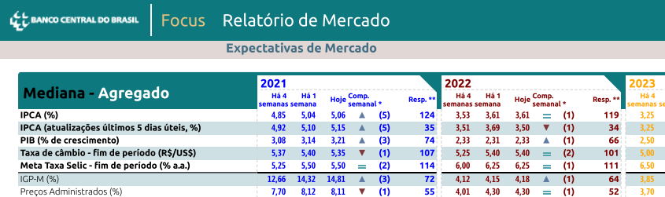
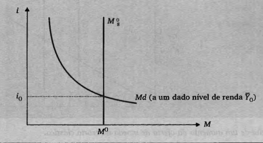

O lado monetário da economia
Esta aula reúne quatro eixos centrais: moeda, meios de pagamento, oferta e demanda por moeda e estrutura do Sistema Financeiro Nacional. A lógica é simples: a moeda viabiliza trocas, o sistema bancário afeta sua quantidade, o Banco Central a regula, e dessa interação surgem liquidez, juros e impactos sobre a atividade econômica.
meio de troca, unidade de conta e reserva de valor
meios de pagamento e agregados monetários
política monetária e equilíbrio monetário
Ideia-forte: o que determina a riqueza de um país é sua produção global, e não simplesmente a quantidade de moeda em circulação. Confundir uma coisa com a outra é cair na velha falácia da composição.
O que é moeda e para que ela serve?
Definição
Moeda é um objeto de aceitação geral, utilizado na troca de bens e serviços, com aceitação garantida por lei.
Moeda fiduciária
Ela não precisa ter valor intrínseco nem ser lastreada em metal precioso. Basta haver confiança e aceitação geral pelos agentes econômicos.
Meio de troca
Facilita o intercâmbio de bens e serviços e evita a economia de escambo.
Unidade de conta
Permite medir e comparar valores monetários.
Reserva de valor
Preserva poder de compra, embora a inflação possa corroer essa função.
Do M1 ao M4, da base monetária ao multiplicador
Os meios de pagamento representam os haveres com liquidez imediata em poder do público, excluído o setor bancário. Eles são um bom termômetro da liquidez da economia.
Conceito básico
M: meios de pagamento; PMPP: papel-moeda em poder do público; DV: depósitos à vista.
Agregados monetários
M1 contém os ativos com liquidez mais imediata.
M2, M3 e M4 ampliam esse conceito com ativos menos líquidos, chamados de quase-moeda.
Monetização e desmonetização
O aumento da relação M4/M1, típico de processos inflacionários, é chamado de desmonetização. A redução dessa relação é chamada de monetização.
Criação e destruição de moeda
Bancos comerciais podem criar ou destruir moeda ao expandir ou contrair crédito. Já o setor não bancário apenas transfere recursos entre poupadores e tomadores.
Base monetária
Também chamada de moeda de alta potência, passivo monetário do Banco Central ou emissão primária de moeda.
Multiplicador monetário
Mostra o grau de expansão da base monetária via sistema bancário, convertendo moeda primária em meios de pagamento.
c: taxa de retenção do público; r: taxa de encaixe dos bancos comerciais.

Objetivos e instrumentos do Banco Central
A política monetária busca regular o ritmo da demanda agregada no curto prazo, evitando que cresça mais rápido que a oferta agregada e gere pressões inflacionárias.
Compulsório
Parcela dos depósitos à vista que os bancos devem manter no Bacen. Se o compulsório sobe, cai a disponibilidade de recursos para empréstimos e a oferta de moeda tende a diminuir.
Redesconto
Linha de empréstimo do BC aos bancos em falta temporária de liquidez. Em geral, aumento da taxa de redesconto desestimula a expansão do crédito.
Open market
Compra e venda de títulos públicos pelo Bacen para ajustar liquidez. Compra de títulos injeta moeda; venda de títulos retira moeda.
Controle do crédito
Inclui regulação, persuasão moral, supervisão e fiscalização bancária, afetando a disposição dos bancos em conceder crédito.
BACEN em uma linha
É o órgão executivo central do SFN, banco dos bancos, banco emissor e executor da política monetária. É por meio dele que o Estado intervém diretamente no sistema financeiro e, por tabela, na economia.
Por que manter moeda? O que determina os juros?
Demanda por moeda em Keynes
Transação: para pagar compromissos correntes.
Precaução: para lidar com incertezas.
Especulação: para aproveitar oportunidades de investimento; relação inversa com a taxa de juros.
Leitura rápida
A demanda por moeda cresce com a renda e tende a cair quando os juros sobem, pois ativos financeiros passam a parecer mais atraentes.
Teoria Quantitativa da Moeda
Essa equação liga o lado monetário ao lado real da economia.
M: meios de pagamento; v: velocidade-renda da moeda; P: nível geral de preços; y: renda real.
Interpretação clássica
Se a velocidade da moeda for constante no curto prazo, aumentos de M podem elevar o produto, os preços, ou ambos, dependendo do grau de desemprego e do nível de capacidade produtiva.
Taxa de juros
É o valor do dinheiro no tempo: rentabilidade para quem aplica e custo para quem toma empréstimo.
Juros altos tendem a frear consumo e investimento, incentivar entrada de capitais e aumentar o custo da dívida pública.
Paridade de Fisher
A taxa real de juros é obtida ao descontar da taxa nominal a inflação esperada.

Quem regula, quem fiscaliza e quem opera
A parte final da aula apresenta a estrutura do SFN, dividida entre subsistema normativo e subsistema operativo. Traduzindo: uns definem as regras; outros colocam a máquina para funcionar.
Subsistema normativo
| Órgão | Papel principal |
|---|---|
| CMN | Define diretrizes gerais da política monetária, creditícia e financeira. |
| BACEN | Executa a política monetária e fiscaliza instituições financeiras. |
| CVM | Normatiza e fiscaliza o mercado de valores mobiliários. |
| SUSEP / PREVIC | Fiscalizam seguros e previdência complementar. |
Subsistema operativo
É composto pelas instituições bancárias e não bancárias que realizam a intermediação financeira.
Exemplos: bancos comerciais, bancos de investimento, bancos de desenvolvimento, cooperativas de crédito, corretoras, distribuidoras, seguradoras e entidades de previdência.
A aula ainda detalha o papel de instituições especiais como BB, BNDES e CEF.
O que precisa ficar na cabeça
20 questões para revisar a aula
A maior parte é diretamente respondível a partir do conteúdo da aula; as últimas exigem pequena integração de conceitos.